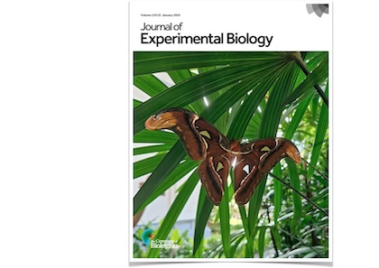
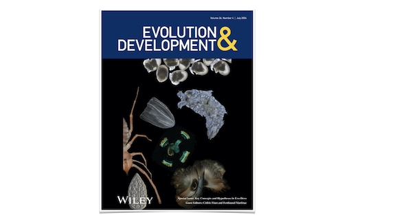

PEER-REVIEWED PUBLICATIONS
Chatterjee M, Finet C, Siegel KJ, Loh LS, Delgado S, McDonald JMC, Markenscoff-Papadimitriou E, Monteiro A, Reed RD. Butterfly wing iridescence is regulated by araucan, a direct target of optix and spalt.
bioRxiv
Finet C ✉, Bei YY, Saranathan V, Ruan Q ✉, Monteiro A ✉. The upper surface of butterfly wing scales is a toolbox for structural color diversity.
bioRxiv
Finet C ✉, Weng Y, Hanotte B ✉, Monteiro A ✉. UV-reflective wing patterns in saturniid moths: diversity and mechanisms.
Journal of Experimental Biology 229: 251600. online

Balakrishnan D, Prakash A, Daurer BJ, Finet C, Lim YC, Shen Z, Thibault P, Loh ND, Monteiro A. Nanoscale cuticle mass density variations influenced by pigmentation in butterfly wing scales.
Nature Communications 16: 7085. online | pdf
Ru H, Finet C, Monteiro A. Calreticulin is required for cuticle deposition and trabeculae formation inside butterfly wing scale cells.
Developmental Biology 526: 1-14. online
Finet C ✉. (2024) Developmental genetics of cuticular micro- and nano-structures in insects.
Current Opinion in Insect Science 65: 101254. online
Banerjee TD* ✉, Finet C* ✉, Seah KS, Monteiro A ✉. (2024) Optix regulates nanomorphology of butterfly scales primarily via its effects on pigmentation.
Frontiers in Ecology and Evolution 12: 1392050. online | pdf
Kompa A, Finet C, Saranathan V, Fernandez JG. (2024) Large-scale artificial production of Coleoptera cuticle iridescence and its use in conformal biodegradable coatings.
Advanced Engineering Materials 26: 2301713. online | pdf | Phys.org
Finet C ✉. (2023) Light as matter: natural structural colour in art.
Humanities & Social Sciences Communications 10: 248. online | pdf
Finet C* ✉, Ruan Q*, Bei YY, Chan JYE, Saranathan V, Yang JKW ✉, Monteiro A ✉. (2023) Multi-scale dissection of wing transparency in the clearwing butterfly Phanus vitreus.
Journal of the Royal Society Interface 20: 20230135. online | pdf

Raut HK, Ruan Q, Finet C, Saranathan V, Yang JKW, Fernandez JG. (2022) The height of chitinous ridges alone produces the entire structural colour palette.
Advanced Materials Interfaces 9: 2201419. online | arXiv
Prakash A, Finet C, Banerjee TD, Saranathan V, Monteiro A. (2022) Antennapedia and optix regulate metallic silver wing scale development and cell shape in Bicyclus anynana butterflies.
Cell Reports 40: 111052. online | pdf
Finet C ✉, Decaras A, Rutkowska M, Roux P, Collaudin S, Joncour P, Viala S, Khila A ✉. (2022) Leg length and bristle density, both necessary for water surface locomotion, are genetically correlated in water striders.
Proceedings of the National Academy of Sciences 119: e2119210119. online | pdf | This week in PNAS

Pu J, Wang Z, Cong H, Chin JSR, Justen J, Finet C, Yew JY, Chung H. (2021) Repression precedes independent evolutionary gains of a highly specific gene expression pattern.
Cell Reports 37: 109896. online | pdf
Zhang Y, Katoh TK, Finet C, Izumitani HF, Toda MJ, Watabe H, Katoh T. (2021) Phylogeny and evolution of mycophagy in the Zygothrica genus group (Diptera: Drosophilidae).
Molecular Phylogenetics and Evolution 163: 107257. online
Finet C ✉, Kassner VA, Carvalho AB, Chung H, Day JP, Day S, Delaney EK, De Ré FC, Dufour HD, Dupim E, Izumitani HF, Gautério TB, Justen J, Katoh T, Kopp A, Koshikawa S, Longdon B, Loreto EL, Nunes MDS, Raja KKB, Rebeiz M, Ritchie MG, Saakyan G, Sneddon T, Teramoto M, Tyukmaeva V, Vanderlinde T, Wey EE, Werner T, Williams TM, Robe LJ, Toda MJ, Marlétaz F. (2021) DrosoPhyla: resources for drosophilid phylogeny and systematics.
Genome Biology and Biology 13: evab179. online | pdf
Saranathan V, Finet C. (2021) Cellular and developmental basis of avian structural coloration.
Current Opinion in Genetics & Development 69: 56-64. online | arXiv
Luo M*, Finet C*, Cong H, Wei H, Chung H. (2020) The evolution of insect metallothioneins.
Proceedings of the Royal Society of London B 287: 20202189. online
Dufour HD, Koshikawa S ✉, Finet C ✉. (2020) Temporal flexibility of gene regulatory network underlies a novel wing pattern in flies.
Proceedings of the National Academy of Sciences 117: 11589-11596. online | pdf | The Node
Finet C, Slavik K, Pu J, Millar JG, Carroll SB, Chung H. (2019) Birth-and-death evolution of the fatty acyl-CoA reductase gene family and diversification of cuticular hydrocarbon synthesis in Drosophila.
Genome Biology and Evolution 11: 1541-1551. online | pdf
Scarpa E, Finet C, Blanchard GB, Sanson B. (2018) Actomyosin-driven tension at compartmental boundaries orients cell division independently of cell geometry in vivo.
Developmental Cell 47: 727-740. online | pdf | preLights | DevCell Preview | EMBO News&Views
Finet C ✉, Decaras A, Armisén D, Khila A ✉. (2018) The achaete-scute complex contains a single gene that controls bristle development in the semi-aquatic bugs.
Proceedings of the Royal Society of London B 285: 20182387. online | pdf
Armisén D, Rajakumar R, Friedrich M, Benoit JB, Robertson HM, Panfilio KA, Ahn SJ, Poelchau MF, Chao H, Dinh H, Doddapaneni H, Dugan S, Gibbs RA, Hughes DST, Han Y, Lee SL, Murali SC, Muzny DM, Qu J, Worley KC, Munoz-Torres M, Abouheif E, Bonneton F, Chen T, Childers C, Cridge AG, Crumière AJJ, Decaras A, Didion EM, Duncan E, Elpidina EN, Favé MJ, Finet C, Jacobs CGC, Jarvela A, Jennings EJ, Jones JW, Lesoway MP, Lovegrove M, Martynov A, Oppert B, Lillico-Ouachour A, Rajakumar A, Refki PN, Rosendale AJ, Santos ME, Toubiana W, van der Zee M, Vargas Jentzsch IM, Lowman AV, Viala S, Richards S, Khila A. (2018) The genome of the water strider Gerris buenoi reveals expansions of gene repertoires associated with adaptations to life on the water.
BMC Genomics 19: 832. online | pdf
Finet C* ✉, Floyd SK*, Conway SJ, Zhong B, Scutt CP, Bowman JL ✉. (2016) Evolution of the YABBY gene family in seed plants.
Evolution & Development 18: 116-126. online
Finet C ✉, Berne-Dedieu A, Scutt CP, Marlétaz F. (2013) Evolution of ARF gene family in land plants: old domains, new tricks.
Molecular Biology and Evolution 30: 45-56. online | pdf
Finet C ✉, Jaillais Y. (2012) AUXOLOGY: when auxin meets plant evo-devo.
Developmental Biology 369: 19-31. online | pdf
Vialette-Guiraud AC, Alaux M, Legeai F, Finet C, Chambrier P, Brown S, Chauvet A, Magdalena C, Rudall P, Scutt CP. (2011) Cabomba as a model for studies of early angiosperm evolution.
Annals of Botany 108: 589-598. online | pdf
Vialette-Guiraud AC, Adam H, Finet C, Jasinski S, Jouannic S, Scutt CP. (2011) Insights from ANA-grade angiosperms into the early evolution of CUP-SHAPED COTYLEDON genes.
Annals of Botany 107: 1511-1519. online | pdf
Banks JA, Nishiyama T, Hasebe M, Bowman JL, Gribskov M, dePamphilis C, Albert VA, Aono N, Aoyama T, Ambrose BA, Ashton NW, Axtell MJ, Barker E, Barker MS, Bennetzen JL, Bonawitz ND, Chapple C, Cheng C, Correa LG, Dacre M, DeBarry J, Dreyer I, Elias M, Engstrom EM, Estelle M, Feng L, Finet C, Floyd SK, Frommer WB, Fujita T, Gramzow L, Gutensohn M, Harholt J, Hattori M, Heyl A, Hirai T, Hiwatashi Y, Ishikawa M, Iwata M, Karol KG, Koehler B, Kolukisaoglu U, Kubo M, Kurata T, Lalonde S, Li K, Li Y, Litt A, Loqué D, Lyons E, Manning G, Maruyama T, Michael TP, Mikami K, Miyazaki S, Morinaga S, Murata T, Mueller-Roeber B, Nelson DR, Obara M, Oguri Y, Olmstead RG, Onodera N, Petersen BL, Pils B, Prigge M, Rensing SA, Riano-Pachon DM, Roberts AW, Sato Y, Scheller HV, Schulz B, Schulz C, Shakirov EV, Shibagaki N, Shinohara N, Shippen DE, Sorensen I, Sotooka R, Sugimoto N, Sugita M, Sumikawa N, Tanurdzic M, Theissen G, Ulvskov P, Weng JK, Willats WG, Wipf D, Wolf PG, Yang L, Zimmer AD, Zhu Q, Mitros T, Helstein U, Otillar R, Salamov A, Schmutz J, Shapiro H, Lindquist E, Lucas S, Rokhsar D, Grigoriev IV. (2011) The compact Selaginella genome identifies changes in gene content associated with the evolution of vascular plants.
Science 332: 960-963. online | pdf
Finet C ✉, Timme RE, Delwiche CF, Marlétaz F. (2010) Multigene phylogeny of the green lineage reveals the origin and diversification of land plants.
Current Biology 20: 2217-2222. online | pdf | F1000 Biology
Kremer N, Dedeine F, Charif D, Finet C, Allemand R, Vavre F. (2010) Do variable compensatory mechanisms explain the polymorphism of the dependence phenotype in the Asobara tabida-Wolbachia association?
Evolution 64: 2969-2979. online | pdf
Finet C, Fourquin C, Vinauger-Douard M, Berne-Dedieu A, Chambrier P, Paindavoine S, Scutt CP. (2010) Parallel structural evolution of Auxin Response Factors in the angiosperms.
The Plant Journal 63: 952-959. online | pdf
Sjödin P, Hedman H, Shavorskaya O, Finet C, Lascoux M, Lagercrantz U. (2007) Recent degeneration of an old duplicated flowering time gene in Brassica nigra.
Heredity 98: 375-384. online | pdf
Holzer B, Chapuisat M, Kremer N, Finet C, Keller L. (2006) Unicoloniality, recognition and genetic differentiation in a native Formica ant.
Journal of Evolutionary Biology 19: 2031-9. online | pdf
Scutt CP, Vinauger-Douard M, Fourquin C, Finet C, Dumas C. (2006) An evolutionary perspective on the regulation of carpel development.
Journal of Experimental Botany 57: 2143-52. online | pdf
OTHER PUBLICATIONS
Finet C, Prakash A. Editorial: Biological and physical basis of the development of integument and associated structures.
Frontiers in Ecology and Evolution 13: 1609597. online | pdf
Finet C, Marlétaz F. Editorial: Old hypotheses and theories at the heart of current evo-devo research.
Evolution & Development 26: e12487. online

Finet C. Hanging by a hair: the life of a semi-aquatic bug. The Node | 23 February 2022
Dufour HD, Koshikawa S, Finet C. An evolutionary fable: the black pencil and the rubber. The Node | 18 June 2020
Scutt CP, Vinauger-Douard M, Fourquin C, Finet C, Dumas C. (2005) A portrait of the ancestral flower.
Flowering Newsletter 39, Spring 2005: 3-8. pdf